Chapter 4 Summarizing Data Numerically
Learning Outcome:
| Calculate measures of central tendency, position, and spread, including standard deviation. |
In this chapter, we will numerically describe distributions of quantitative variables. Distributions, such as histograms, can be described by three characteristics: shape, center, and spread.
4.1 Measures of Shape
Modes
The mode of some data is an observation with the greatest frequency. There can be more than one mode, but if all the observations have frequency 1, then there is no mode.
Mode is represented by a prominent peak in the distribution.
1. Unimodel Distribution
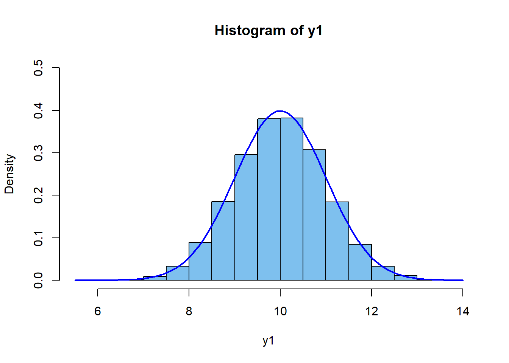
Bimodal Distribution
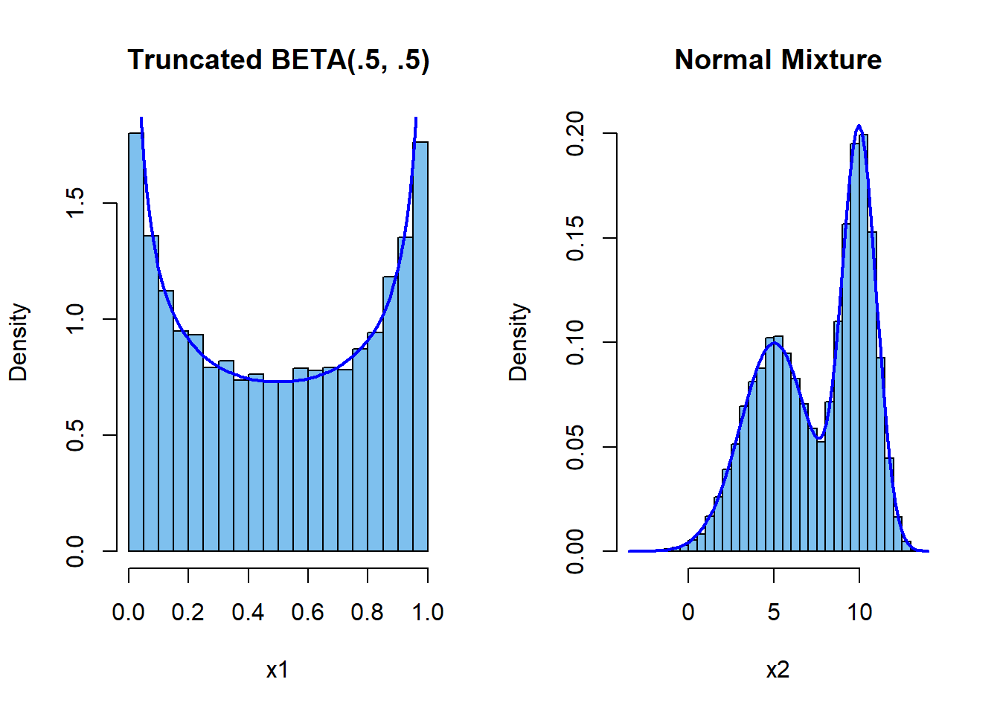
Multimodal Distribution
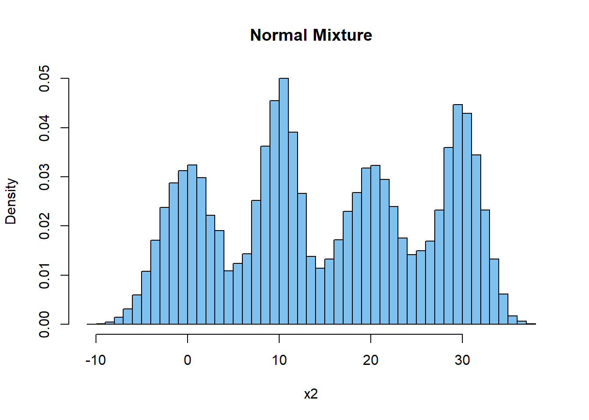
Uniform Distribution
All the bins have the same frequency, or at least close to the same frequency. It is a distribution without a mode.
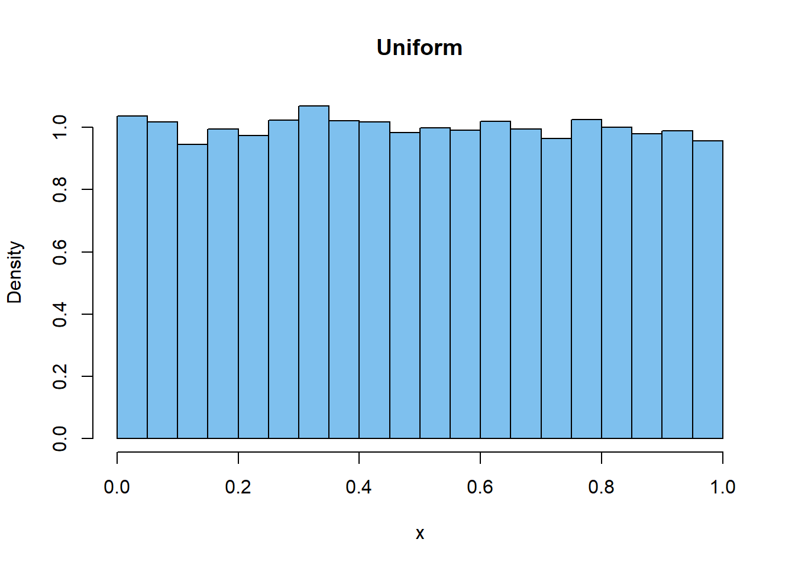
Symmetry
The histogram for a symmetric distribution will look the same on the left and the right of its center.
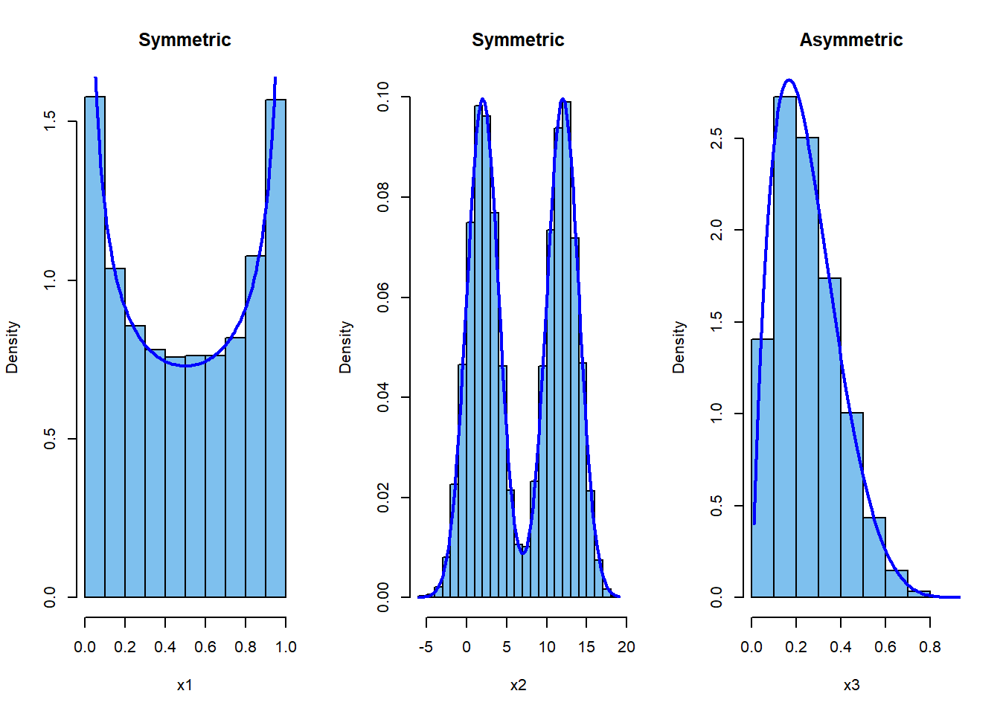
Skew
- A histogram is skewed right if the longer tail is on the right side of the mode.
- A histogram is skewed left if the longer tail is on the left side of the mode.
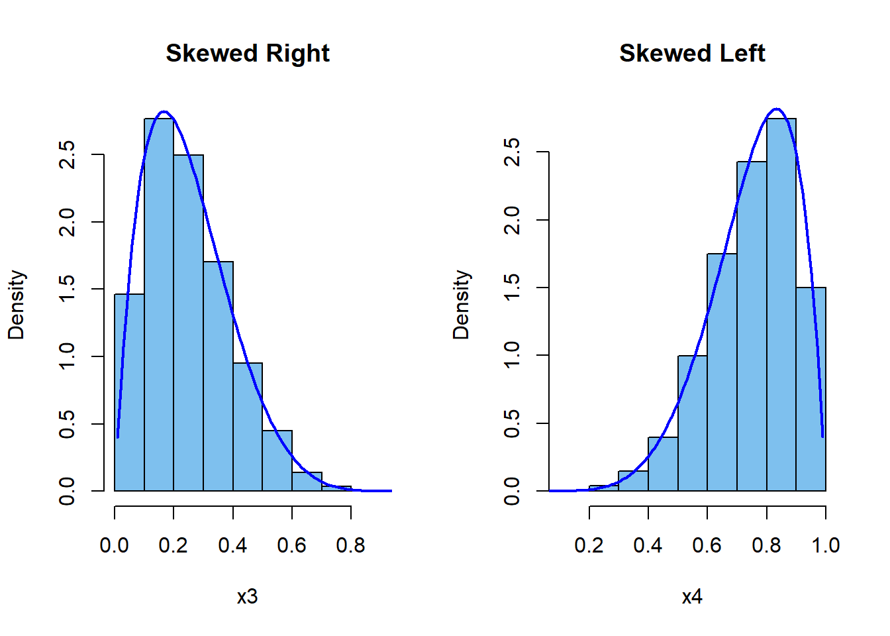
Outlier
- An Outlier is a data value that is far above or far below the rest of the data values.
4.2 Measures of Center
Mean
The sample mean of a numerical variable is computed as the sum of all of the observations divided by the number of observations:
\(\displaystyle \bar x = \sum_{i=1}^n x_i = \frac{(x_1+x_2+...+x_n)}{n}\)
The mean follows the tail
- In a right skewed distribution, the mean is greater than the median.
- In a left skewed distribution, the mean is less than the median.
- In a symmetric distribution, the mean and median are approximately equal.
Median
The median splits an ordered data set in half. If there are an even number of observations, the median is the average of the two middle values. If there are an odd number of observations, the median is the middle value.
[1] 0 0 0 0 0 0 1 1 1 1 1 2 2 3 3 3 4 4 5 5 5 6 6 7 7
[26] 7 9 9 9 10 10 10 11 11 12 14 14 16 17 22 25 25 25 26 26 27 29 42 43 64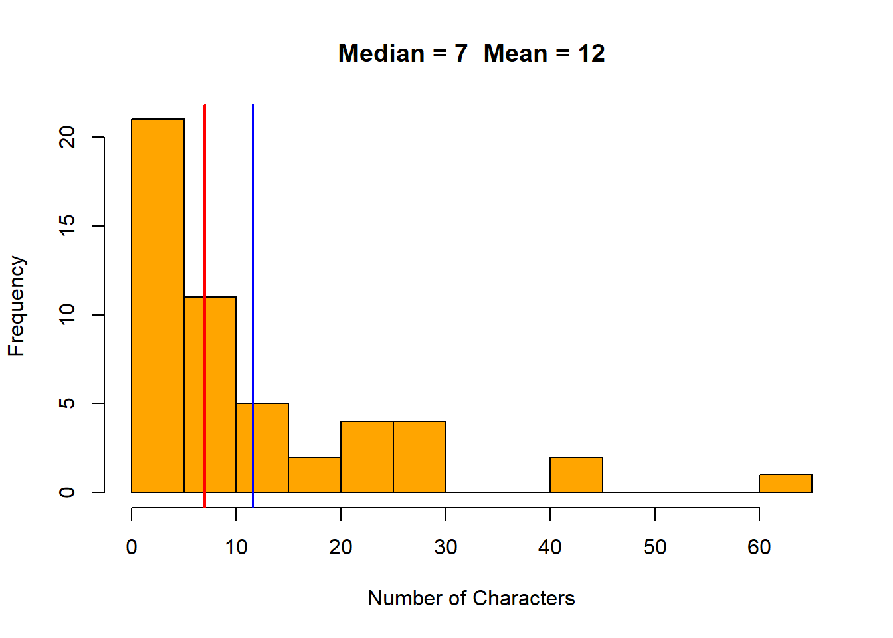
Calculating the Median
\(n\) is odd
- Sort the series in ascending order.
- If the series has odd number \((n)\) of entries, the median is at position \(\frac{n+1}{2}.\)
- Find the median of the series: \(2,4,5,(6),7,9,9\)
- The median is \(6.\)
\(n\) is even
- Sort the series in ascending order.
- If the series has even number \((n)\) of entries, the median is the average of the two middle numbers: \(\frac{n}{2},\frac{n+1}{2}.\)
- Find the median of the numbers: \(2,2,4,6,7,8\)
- Median is the average of the third and the fourth numbers: \(\frac{4+6}{2}=5\)
Example: Comparing the Medians of Two Distributions
\[ \begin{array}{lclc} \text{Pacific State} & \text{Minimum Wage} & \text{Mountain State} & \text{Minimum Wage} \\ \hline \text {Alaska} & 7.75 & \text {Arizona} & 7.90 \\ \text {California} & 8.00 & \text {Colorado} & 8.00 \\ \text {Hawaii} & 7.25 & \text {Idaho} & 7.25 \\ \text {Oregon} & 9.10 & \text {Montana} & 7.90 \\ \text {Washington} & 9.32 & \text {Nevada} & 8.25 \\ & & \text {New Mexico} & 7.50 \\ & & \text {Utah} & 7.25 \\ & & \text {Wyoming} & 5.15 \\ \end{array} \]
Find the median minimum wages of the Pacific and Mountain states.
How the Shape of a Distribution Affects the Mean and the Median
If a distribution is skewed left, the mean is usually less than the median and the median is usually a better measure of the center.
If a distribution is symmetric, the mean is approximately equal to the median and both are reasonable measures of the center.
If a distribution is skewed right, the mean is usually greater than the median and the median is usually a better measure of the center.
List: \({2,3,3,4}\)
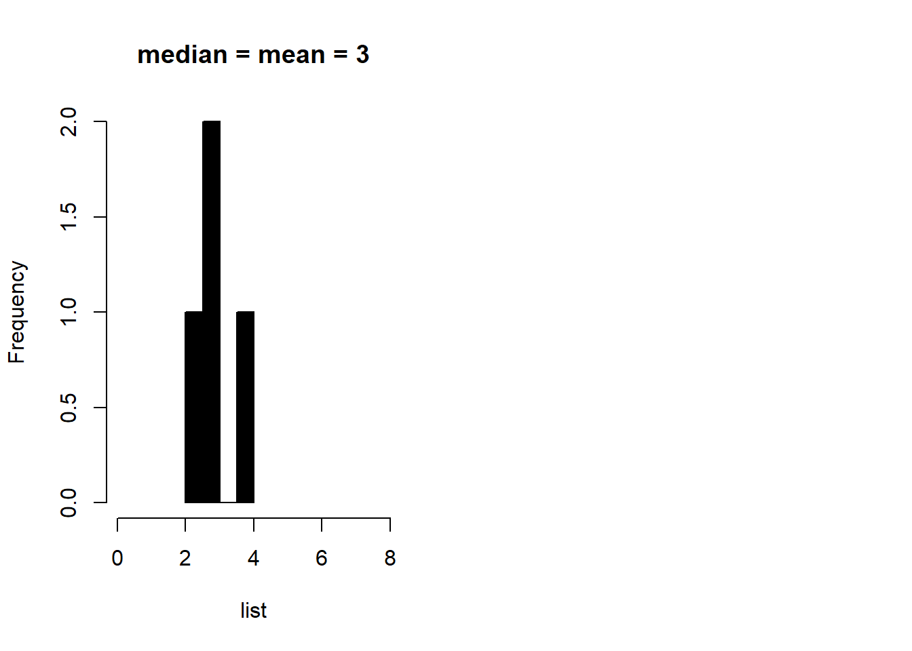
List: \(2,3,3,7\)
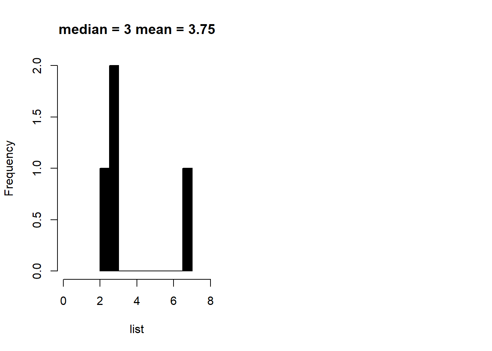
Notice: The median is unaffected by outlier.
Weighted Mean
The weighted mean is the same as the mean, except that it is influenced more by some observations than others. We assign weights to observations as a sort of way of describing its relative importance.
The weighted mean of observations \(x_1, x_2,...,x_n\) using weights \(w_1, w_2,...,w_n\) is given by
\(\displaystyle \bar x =\frac{w_1x_1+w_2x_2+...+w_nx_n}{w_1+w_2+...+w_n}\)
The simple mean is a weighted mean where all the weights are 1.
\(\displaystyle \bar x =\frac{1\times x_1+1\times x_2+...+1\times x_n}{1+1+...+1} = \frac{x_1+x_2+...+x_n}{n}\)
Midrange
The midrange of a data set is the measure of center that is the value midway between the maximum and minimum values in the original data set. It is found by adding the maximum data value to the minimum data value and then dividing the sum by \(2\), as the following formula:
\[ Midrange = \frac{\text{maximum data value + minimum data value}}{2} \]
4.3 Measures of Spread or Variation
Range
The range of a set of data is the difference between the maximum and the minimum data values.
\(range = maximum - minimum\)
The range is sensitive to outliers. A single high or low value will affect the range significantly.
4.4 Standard Deviation of a Sample
- SD \((s)\) of a set of sample values is a measure of how much, on average, the data values deviate away from the sample mean.
- In other word, SD describes the variability of the data set within the range of the dataset.
- Low variability or small spread means that the values tend to be more clustered together.
- High variability or large spread means that the values tend to be far apart.
Calculating the Standard Deviation
The standard deviation is the square root of the variance. It is roughly the average distance of the observations from the mean.
\[ \bbox[yellow,5px] { \color{black}{s= \sqrt{\frac{1}{n-1}\sum(x_i-\bar x)^2}} } \]
Exercise:
\(1. Calculate \space SD \space of \space [0,1]\)
\(2. Calculate \space SD \space of \space [30,20, 41, 21]\)
Which histogram has the largest SD?
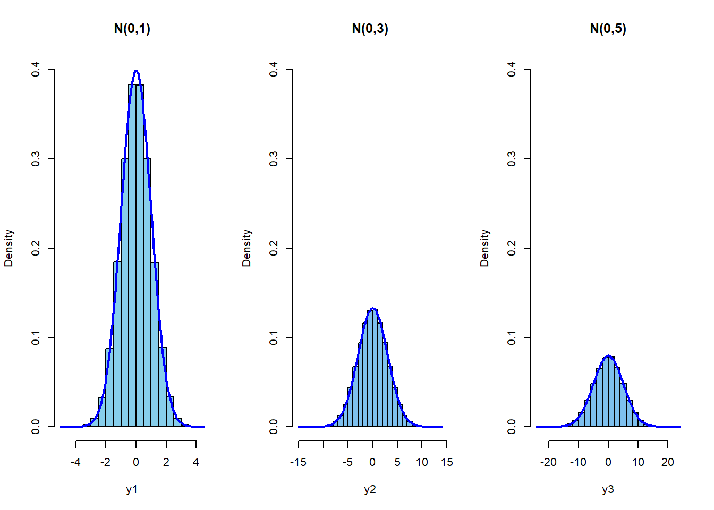
Notice the range of the distributions.
Standard Deviation of a Population
\[ \bbox[yellow,5px] { \color{black}{\sigma= \sqrt{\frac{1}{N}\sum(x_i-\mu)^2}} } \]
Variance of a Sample and Population
The variance of a set of values is a measure of variation equal to the square of the standard variation.
- Sample variance: \(s^2 =\) square of the sample standard deviation \(s\).
- Population variance: \(\sigma^2 =\) square of the population standard deviation \(\sigma\).
Coefficient of Variation
The coefficient of variation (CV) for a set of nonnegative sample or population data, expressed as a percent, describes the standard deviation relative to the mean, and is given by the following:
\[ Sample: CV = \frac{s}{x}.100 \\ Population: CV = \frac{\sigma}{x}.100 \]
4.5 Normal Distribution | 68-95-99.7 Rule
Probabilities for falling 1, 2, and 3 standard deviations of the mean in a normal distribution.
png
2 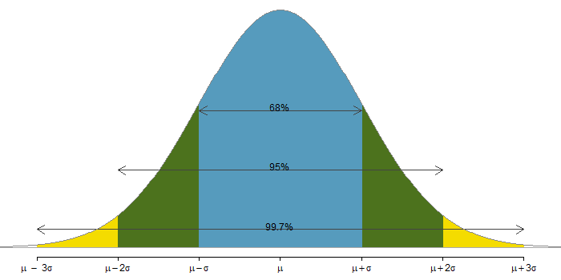
4.6 Percentiles and Quartiles
- Percentiles divide the data in one hundred groups.
- The \(n^{th}\) percentile is the data value such that \(n^{th}\) percent of the data lies below that value.
\[ \text{Percentile of value x} = \frac{\text{number of values less than x}}{\text{total number of values}} \times 100 \]
Three Quartiles \((Q_1, Q_2, Q_3)\)
- \(Q_1\) represents the first quartile, which is the 25th percentile, and is the median of the smaller half of the data set.
- \(Q_2\) represents the second quartile, which is equivalent to the 50th percentile (i.e. the median).
- \(Q_3\) represents the third quartile, or 75th percentile, and is the median of the larger half of the data set
- Interquartile Range \((IQR) = Q_3 - Q_1\)
4.7 Outlier and Fences
When in the context of a box plot, define an outlier as an observation that
right fence: \[ > Q_3 + 1.5 \times IQR \]
left fence: \[ < Q_1 - 1.5 \times IQR \]
Such points are marked using a dot or asterisk in a box plot.
4.8 Box Plot
Data: \([5, 5, 9, 10, 15, 16, 20, 30, 40]\)
Min. 1st Qu. Median Mean 3rd Qu. Max.
5.00 9.00 15.00 16.67 20.00 40.00 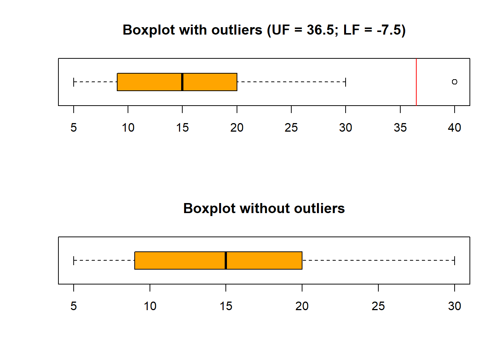
Example: Drawing a Boxplot with an Outlier
Students in one of the author’s statistics classes were surveyed about the number of novels they read in the past year. Here are the anonymous responses (in numbers of novels) of 11 of the students:
\([2, 5, 2, 0, 2, 3, 0, 5, 6, 4, 12]\)
- Construct a boxplot.
- Check if there is any outlier.
4.9 Optional Materials
Altering SD
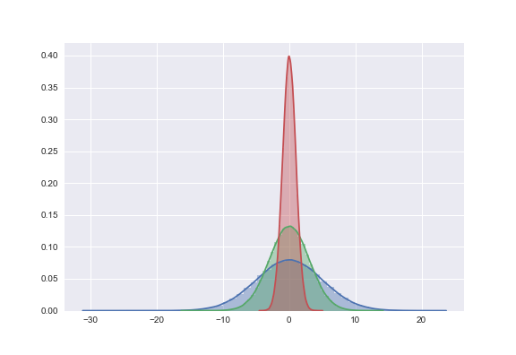
Group Comparison
Comparing distributions of median household income for counties by population gain status
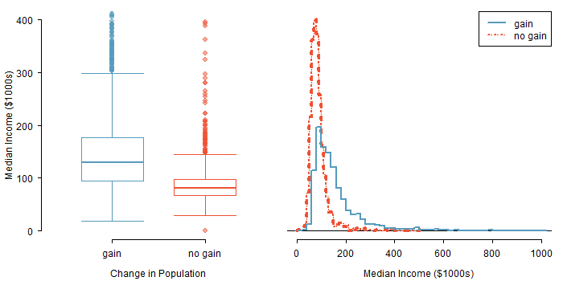
Source: OpenIntroOrg
Smoothing Plot: Moving Average
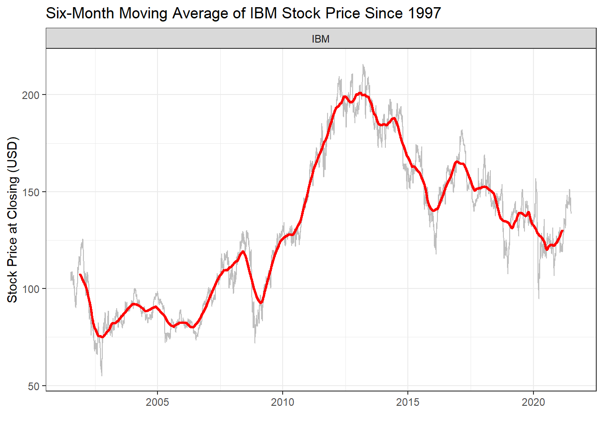
Transformation of the Data
- Data with outliers (i.e. skewed distribution) are hard to interpret
- Such data are often transformed into their logarithmic form to give the skewed distribution a normal (i.e. roughly unimodal and symmetric) shape for better interpretation
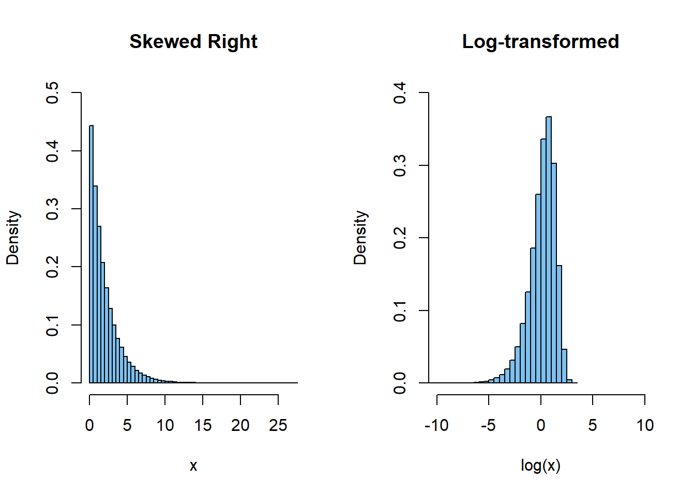